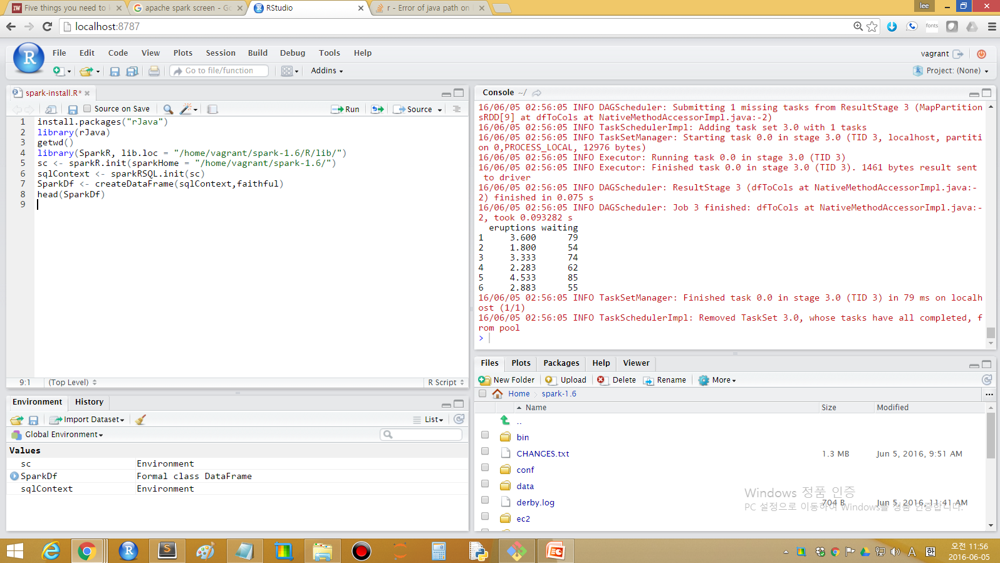

데이터 과학
SparkR 설치
학습 목표
- R 기반 스파크-하둡 플랫폼을 설치한다.
- 가상컴퓨터, 자바, 하둡-스파크, R를 왜 설치하는지 이해한다.
- SparkR로 빅데이터 헬로 월드를 찍어본다.
1. R 기반 스파크-하둡 플랫폼 1
리눅스가 설치된 컴퓨터가 있다면 바로 R 기반 빅데이터 처리 스파크-하둡 툴체인을 구축할 수 있지만, 윈도우 기반에서 가상컴퓨터를 무리없이 돌릴 수 있는 하드웨어가 갖추어진 경우 다음 절차에 따라 설치작업을 완료하면 R 기반 스파크-하둡 플랫폼이 준비된다.
- 부랑자(Vagrant)를 사용하여 우분투 운영체제가 설치된 리눅스 컴퓨터를 생성시킨다.
- 리눅스 컴퓨터 위에 하둡을 설치하기 위한 전제조건으로 자바를 설치한다.
- 하둡을 설치해야 하는데, 아파치 스파크를 설치하는 경우 자동으로 포함되어 있다.
- 아파치 스파크를 설치한다. (하둡도 함께 내장된 버젼을 사용하면 편리하다)
- 스파크와 R을 연결시키고, R개발 도구인 RStudio와 연결한다.
2. 스파크-하둡 플랫폼 구축 설치과정
2.1. 부랑자(Vagrant)를 설치한다.
가상상자(VirtualBox)와 부랑자(Vagrant)를 윈도우즈에 설치하고 나서, 명령라인 인터페이스에서 vagrant init을 실행시키면 Vagrantfile 파일이 생성된다. 텍스트 편집기를 열고 다음과 같이 미리 환경설정을 마친 리눅스 컴퓨터를 생성시킨다.
config.vm.box = "ubuntu/trusty64"→ 64비트 우분투 리눅스 가상컴퓨터 생성config.vm.network "forwarded_port", guest: 8787, host: 8787→ 8787포트로 나중에 RStudio를 웹인터페이스로 접속한다.config.vm.synced_folder "C:/Users/KwangChun/rstudio", "/home/vagrant/rstudio"→ 가상컴퓨터 손님컴퓨터와 로컬 호스트 컴퓨터를 디렉토리를 서로 공유시킨다.vb.memory = "2048"→ 가상컴퓨터 메모리를 2GB로 설정한다.
vagrant up 명령어를 실행시키면 가상컴퓨터가 구동되고, vagrant ssh 하면 ssh로 로그인하게 되고, 비번은 기본디폴트 설정으로 vagrant다.
# -*- mode: ruby -*-
# vi: set ft=ruby :
Vagrant.configure(2) do |config|
# Every Vagrant development environment requires a box. You can search for
# boxes at https://atlas.hashicorp.com/search.
config.vm.box = "ubuntu/trusty64"
config.vm.network "forwarded_port", guest: 8787, host: 8787
config.vm.synced_folder "C:/Users/KwangChun/rstudio", "/home/vagrant/rstudio"
config.vm.provider "virtualbox" do |vb|
# vb.gui = true
# Customize the amount of memory on the VM:
vb.memory = "2048"
end
end2.2. 자바 설치
아파치 하둡(Apache Hadoop)이 자바를 기반으로 하기 때문에 자바 개발환경 혹은 자바를 돌릴 수 있는 가상환경을 설치해야 한다. 리눅스에 openjdk를 설치하여 이 문제를 해결한다. 2
$ sudo add-apt-repository ppa:openjdk-r/ppa
$ sudo apt-get update
$ sudo apt-get install openjdk-8-jdk또다른 방법으로 webupd8team/java를 사용하는 것도 가능하다.
$ sudo apt-add-repository ppa:webupd8team/java
$ sudo apt-get update
$ sudo apt-get install oracle-java8-installer
$ java -versionjava -version 명령어를 통해 자바가 정상적으로 설치된 것을 확인한다.
java version "1.8.0_91"
Java(TM) SE Runtime Environment (build 1.8.0_91-b14)
Java HotSpot(TM) 64-Bit Server VM (build 25.91-b14, mixed mode)만약 스파크를 자바를 설치하지 않고 설치할 경우 JAVA_HOME is not set 라는 오류가 뜨는데, 절대로 당황하지 말고, openjdk를 설치하면 해결된다.
vagrant@vagrant-ubuntu-trusty-64:~/spark-1.6$ ./bin/spark-shell
JAVA_HOME is not set2.3. 스칼라 설치
최신 스칼라 2.11.8 버젼을 다운로드한다. /usr/local/src/scala 디렉토리를 생성하고 다운로드 받은 스칼라 압축파일을 푼다.
$ wget http://downloads.lightbend.com/scala/2.11.8/scala-2.11.8.tgz
$ sudo mkdir /usr/local/src/scala
$ sudo tar xvf scala-2.11.8.tgz -C /usr/local/src/scala/.bashrc 파일을 편집하여 스칼라가 설치된 디렉토리를 경로에 추가한다.
$ sudo gedit .bashrc
$ . .bashrc$ scala -version
Scala code runner version 2.11.8 -- Copyright 2002-2016, LAMP/EPFLscala -version 명령어로 스칼라가 정상적으로 설치된 것을 확인한다.
2.4. 하둡과 스파크 설치 3
하둡과 스파크의 관계가 다음 인포월드, Five things you need to know about Hadoop v. Apache Spark 기사로 잘 정리되어 있다.
| 구분 | 하둡 | 스파크 |
|---|---|---|
| 1. 하둡과 스파크는 다르다 | 분산 데이터 인프라 | 분산된 데이터 처리 도구 |
| 2. 서로 필요는 없다 | HDFS와 MapReduce라는 자체 데이터 처리 도구가 포함 | 하둡과 가장 잘 동작하지만, 굳이 하둡이 필요하지는 않음 |
| 3. 속도 | 맵리듀스를 배치방식이라 늦음 | 인메모리 처리 방식이라 배치는 10배, 인메모리 분석에는 100배 빠름 |
| 4. 모든 작업에 속도가 중요한가 | 정적이며 배치형태 작업에 적합 | 실시간 IoT 센서, 기계학습, 실시간 마케팅, 온라인 추천 등에 적합 |
| 5. 장애 복구 능력 | 태생적으로 시스템 장애에 내성이 강함 | RDD로 장애 복구능력을 기본 제공 |
하둡 스파크 설치 과정은 다음과 같다.
- 아파치 스파크 다운로드 사이트에서 설치파일을 지정한다.
- 마우스 우클릭하여
다른 이름으로 링크 저장...하여 파일 URI를 복사한다.
- 마우스 우클릭하여
wget명령어로 파일을 가상컴퓨터로 받아 온다.- 스파크와 하둡이 모두 포함된 경우 약 300 MB 정도 크기가 나온다.
- 압축을
tar명령어로 풀고 나면 모든 설치가 완료된 것이다. .\bin\spark-shell명령어를 쉘에서 입력하면 스파크 설정이 완료된 것이다.
$ wget http://d3kbcqa49mib13.cloudfront.net/spark-1.6.1-bin-hadoop2.6.tgz
$ tar -xvf spark-1.6.1-bin-hadoop2.6.tgz
$ cd spark-1.6.1-bin-hadoop2.6/
$ ./bin/spark-shellUsing Spark's repl log4j profile: org/apache/spark/log4j-defaults-repl.properties
To adjust logging level use sc.setLogLevel("INFO")
Welcome to
____ __
/ __/__ ___ _____/ /__
_\ \/ _ \/ _ `/ __/ '_/
/___/ .__/\_,_/_/ /_/\_\ version 1.6.1
/_/
Using Scala version 2.10.5 (OpenJDK 64-Bit Server VM, Java 1.8.0_91)
Type in expressions to have them evaluated.
Type :help for more information.
Spark context available as sc.
SQL context available as sqlContext.
scala>2.4.1. 소스코드 컴파일 설치
컴파일된 스파크를 사용해도 되고 소스코드를 가지고 직접 빌드해서 스파크를 설치한다.
parallels@ubuntu:~$ cd spark-1.6.1/
parallels@ubuntu:~/spark-1.6.1$ sbt/sbt assembly스파크 소스코드가 설치된 곳으로 가서 sbt/sbt assembly 명령어로 실행을 하면 빌드를 시작한다. 시간이 조금 걸리는 시원한 커피를 한잔 마시고 와도 좋다.
스파크를 빌드하는데 SBT(Simple Build Tool)이 사용되는데 스파크에 번들로 같이 제공된다.
만약 가상컴퓨터 위에 우분투를 올려 컴파일하는 경우 1GB 메모리는 오류 메시지가 나니 충분히 준비하고 sbt/sbt assembly 명령어를 실행한다.
parallels@ubuntu:~/spark-1.6.1$ ./bin/run-example SparkPi 10....
Pi is roughly 3.142296
...명령어를 실행시켜 스파크가 제대로 설치되었는지 확인한다. \(\pi\)는 대략 3.142296 값을 출력한다.
2.4. R, RStudio 스파크 설치
2.4.1. rJava 설치
C++와 R을 연결시켜주는 팩키지가 Rcpp라면, R과 자바를 연결해주는 팩키지가 rJava다.
install.packages("rJava")
library(rJava)R 콘솔, RStudio에서 상기 명령어가 잘 동작하지 않는 경우
sudo R CMD javareconf명령어를 쉘에서 실행하고rJava를 설치한다. 4sudo apt-get install r-cran-rjavaR과 자바를 문제없이 연결시킨r-cran-rjava를 설치한다. 5
2.4.2. SparkR 팩키지 R 적재
SparkR 라이브러리를 스파크가 설치된 디렉토리를 지정해서 적재시킨다.
library(SparkR, lib.loc = "/home/vagrant/spark-1.6/R/lib/")Attaching package: ‘SparkR’
The following objects are masked from ‘package:stats’:
cov, filter, lag, na.omit, predict, sd, var
The following objects are masked from ‘package:base’:
colnames, colnames<-, endsWith, intersect, rank, rbind, sample, startsWith,
subset, summary, table, transform2.4.3. SparkR 헬로월드 6
sparkHome 홈디렉토리를 지정하여 sc 객체로 지정한다. sparkRSQL.init로 SQL 초기화를 하고 나서 createDataFrame 데이터프레임을 지정한다.
이제 데이터프레임으로 R로 넘어왔기 때문에 sparkDf 데이터프레임으로 다양한 통계분석을 수행하면 된다.
sc <- sparkR.init(sparkHome = "/home/vagrant/spark-1.6/")
sqlContext <- sparkRSQL.init(sc)
SparkDf <- createDataFrame(sqlContext,faithful)
head(SparkDf) eruptions waiting
1 3.600 79
2 1.800 54
3 3.333 74
4 2.283 62
5 4.533 85
6 2.883 55
3. 맥 운영체제 7
맥(OS X)에서 SparkR을 설치하는 것은 단 6줄로 간단히 처리할 수 있다.
- 만약 자바가 설치되지 않은 경우, 자바를 설치한다.
- 하둡을 설치한다.
- 아파치-스파크를 설치한다.
- RStudio 에서 SparkR을 설정한다.
$ brew install Caskroom/cask/java
$ brew install hadoop
$ brew install apache-spark
$ SparkRparallel-r $ SparkR
R version 3.2.4 (2016-03-10) -- "Very Secure Dishes"
Copyright (C) 2016 The R Foundation for Statistical Computing
Platform: x86_64-apple-darwin13.4.0 (64-bit)
R은 자유 소프트웨어이며, 어떠한 형태의 보증없이 배포됩니다.
또한, 일정한 조건하에서 이것을 재배포 할 수 있습니다.
배포와 관련된 상세한 내용은 'license()' 또는 'licence()'을 통하여 확인할 수 있습니다.
R은 많은 기여자들이 참여하는 공동프로젝트입니다.
'contributors()'라고 입력하시면 이에 대한 더 많은 정보를 확인하실 수 있습니다.
그리고, R 또는 R 패키지들을 출판물에 인용하는 방법에 대해서는 'citation()'을 통해 확인하시길 부탁드립니다.
'demo()'를 입력하신다면 몇가지 데모를 보실 수 있으며, 'help()'를 입력하시면 온라인 도움말을 이용하실 수 있습니다.
또한, 'help.start()'의 입력을 통하여 HTML 브라우저에 의한 도움말을 사용하실수 있습니다
R의 종료를 원하시면 'q()'을 입력해주세요.
Launching java with spark-submit command /usr/local/Cellar/apache-spark/1.6.0/libexec/bin/spark-submit "sparkr-shell" /var/folders/g3/97168ry52ll6zfyl6ykyk3br0000gn/T//Rtmp6KjqqH/backend_port136f6e14d4f5
log4j:WARN No appenders could be found for logger (io.netty.util.internal.logging.InternalLoggerFactory).
....
....
16/06/06 14:50:12 INFO BlockManagerMaster: Registered BlockManager
Welcome to
____ __
/ __/__ ___ _____/ /__
_\ \/ _ \/ _ `/ __/ '_/
/___/ .__/\_,_/_/ /_/\_\ version 1.6.0
/_/
Spark context is available as sc, SQL context is available as sqlContext
> RStudio에서 SparkR을 실행할 경우 다음과 명령어를 실행한다.
## 스파크가 설치된 환경정보를 받아온다.
spark_path <- strsplit(system("brew info apache-spark",intern=T)[4],' ')[[1]][1]
## SparkR 라이브러리 디렉토리를 지정한다.
.libPaths(c(file.path(spark_path,"libexec", "R", "lib"), .libPaths()))
## SparkR 라이브러리를 적재한다.
library(SparkR)
sc <- sparkR.init()
sqlContext <- sparkRSQL.init(sc)
df <- createDataFrame(sqlContext, iris)
head(df)